※随時更新していきます
11/19 追記した内容
- アイテム周回について：オススメの周回場所（⑱道中2・⑲道中3）を追加
- 袋ノ書：ドロップ場所に⑲道中3を追加
- 交渉の指輪：ドロップ報告（クエスト12,14,17）、⑱⑲の呼応ノ書に交渉術が付く情報を追加
- 呼び寄せの香：契約書+2・呼応ノ書の情報、ドロップ場所に⑲道中3を追加
- 幸運の金丹：ドロップ場所に⑲道中3を追加
- 金ノ書：アイテムを追加
- 特能進化+3：項目を追加
パワクエ 西球記
重要アイテム一覧
パワクエ「西球記（さいきゅうき）」で重要となるアイテムの一覧です。
アイテム周回について
専用アイテムの周回オススメは⑲道中3です。
契約書は⑱道中2や、むずクエ(短縮ルート)がオススメです。 ※11/20更新
⑲道中3は、ボスドロップ以外でも専用アイテムが出やすく、エリア3で祈願出来るので専用アイテム集めに向いています。
⑱道中2は、特殊能力秘伝書の他、[アルティメット]明神が超低確率でドロップするのが特徴。専用アイテムも少しドロップします。
むずクエはエリア全てを回らず、最短ルートを回る事で[最終兵器]虹谷誠や、その他契約書を狙うのに向いています。専用アイテムも少しドロップします。
⑲道中3の周回記録はコチラ ※11/19追記
むずクエの周回記録はコチラ ※11/20追記
アイテムに付くスキルは、高難度のクエストの方がレアなスキル・追加スキルが付く確率が高く、アイテムのランクも高くなります。
やり込み勢は一部のアイテムを除いてむずクエ・むちゃクエでアイテム厳選するのをおすすめします。
むずクエは攻略するまでの道のりが長く、むちゃクエは祈願が無いので周回やや不向きと判断しました。
むずクエは[最終兵器]虹谷誠の契約書がエリア2でドロップするので、短縮ルートを解説に挙げました。
袋ノ書（袋変換の術）
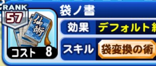
このアイテムを持ち込む事で使える仙術「袋変換の術」が周回を行う上で非常に重要です！
ゴールマスの袋のレアリティを上げる事が出来ます。
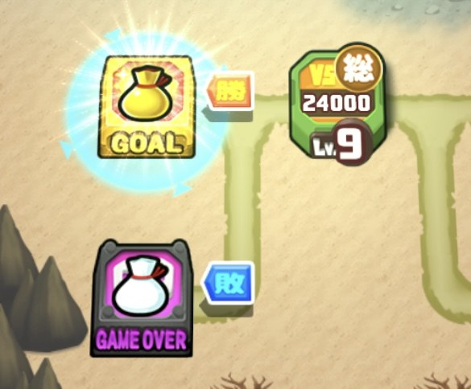
白から金になる事も!
まずはクエスト⑪まで進めてから、他のアイテムを狙うのをオススメします。
主なドロップ場所
- ⑪決戦のとき エリア1 ボス勝利（実践上確定）
- ⑲道中3 道中袋・道中ボス ※11/19追記
交渉の指輪（交渉術3）
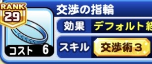
主なドロップ場所
- ④ゴジョー エリア3 グッドゴール（高確率）
- ⑦ひょうたんの中 エリア2 ボス勝利（高確率） ※仙術使用不可
前半のクエストになるので、契約書や専用アイテムなどの副産物には期待できません。
管理人は④ゴジョーにて交渉術3付き交渉の指輪がドロップしました。
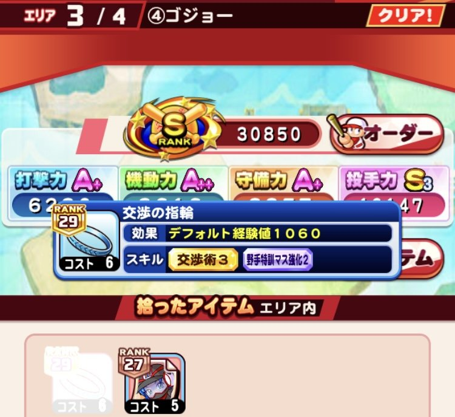
※クエスト12,14,17にてドロップしたとの報告あり。
⑱道中2や、⑲道中3でドロップする呼応ノ書でも交渉術のスキルが付く事を確認しています。
⑱と⑲では祈願でスキルのレベルを上げる事も狙えるので、④で交渉術3が落ちない人は⑱や⑲を周回してみるといいかもしれません。 ※11/19追記
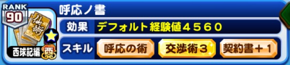
呼び寄せの香（契約書+〇）
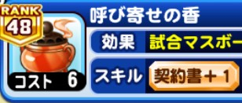
このアイテムに付いている契約書+1のスキルがあると、神前試合で選択できる契約書の候補数が1枚増えます。
そのため、神前試合で狙った契約書を獲得しやすくなります。
上位スキルの契約書+2も存在します。契約書+3があるかはまだ不明です。 ※11/19追記
呼応ノ書にも契約書+1のスキルが付く事がある事を確認済み。※11/19追記
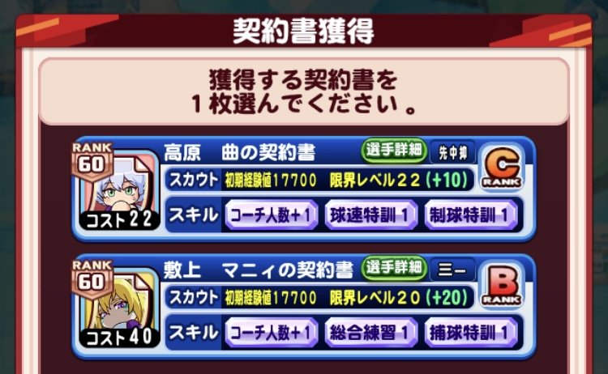
主なドロップ場所
- ⑨謎の医者 エリア2 ボス勝利（不確定）
- ⑲道中3 道中袋・道中ボス ※11/19追記
⑲は祈願を使えるため、上位スキルを狙いやすくなっています。周回するならココがオススメです。
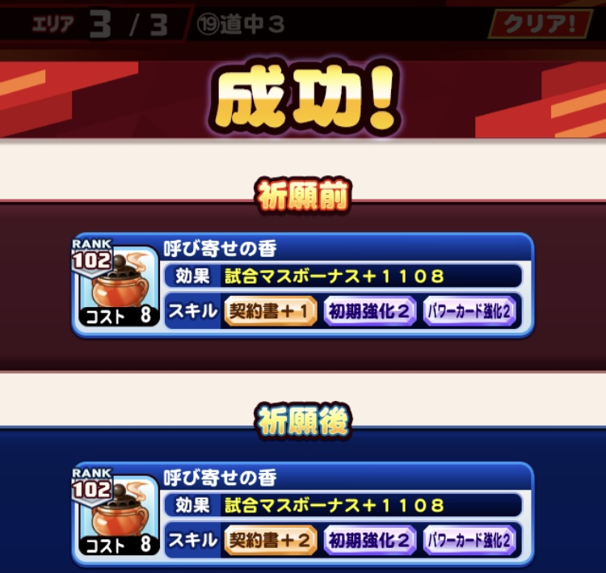
幸運の金丹（祈願率UP〇）
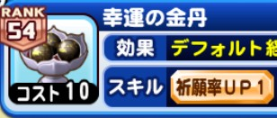
このアイテムに付いている祈願率UP1というスキルがあると、祈願成功率が少し上がります。
上位スキルの祈願率UP2も確認済みです。祈願率UP3があるかはまだ未確認です。
ただし他の専用アイテムにも同じスキルが付く事を確認済みなので、無理して序盤のクエストを周回しなくてもよいでしょう。
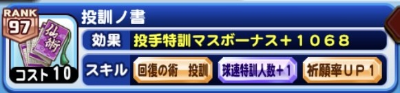
主なドロップ場所
- ⑨謎の医者 ボス勝利（不確定）
- ⑲道中3 道中袋・道中ボス ※11/19追記
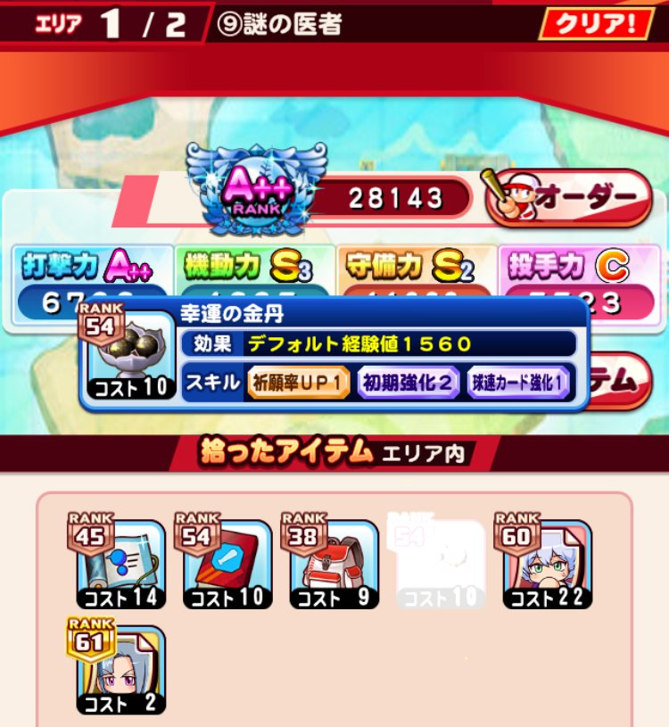
金ノ書（回復の術 ○）※11/19追加
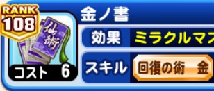
このアイテムを持ち込む事で使える仙術「回復の術 金」が、むずクエ・むちゃクエで重宝します。
「錬金の術」と組み合わせる事で、ターンを回復しながら進めるようになります。
チームランクを更新するのに必須のアイテムです。
主なドロップ場所
- ⑲道中3 道中袋・道中ボス
特能進化+3※11/19追加
主に、金ノ書に付く西球記専用スキルです。
神前試合マスで圧勝した時にランクアップする特殊能力の数が3つ増えます。
ガチのチームランク更新を狙う上で絶対に必要となるのでGETしましょう！
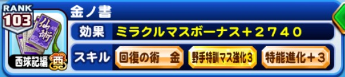
主なドロップ場所
- ⑲道中3 道中袋・道中ボス
西球記の攻略ページ


西球記の攻略（トップ）に戻る